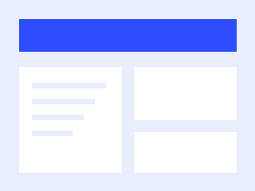
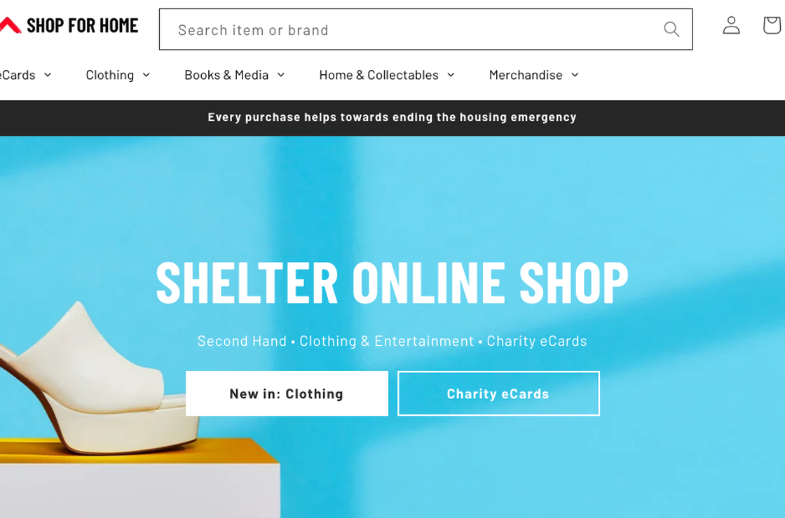
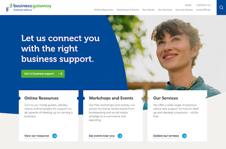
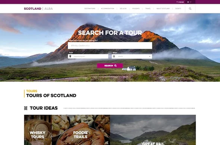
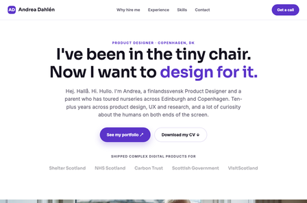
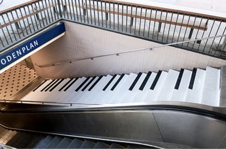

Hej. Hallå. Hi. Hullo.
Product designer turning messy problems into simple, useful experiences.
I'm Andrea — a Copenhagen-based product designer with 10+ years of experience shaping complex digital products and services. I work across research, UX and UI, from early discovery through to polished delivery.
-

Tabatwo
Defining and validating the core UX of a social fitness platform ahead of wider rollout.
-

Shelter Scotland
Digital strategy, delivery and accessibility for a national homelessness charity — leading a team of eight.
-

Business Gateway
A full website redevelopment on agile and lean methods, reaching a WAI 'A' accessibility rating.
-

Tours Management System
A bespoke booking platform — 1,600+ tours and 600+ operators managed in its first year.
-

Famly
A speculative product concept, prototyped end to end and shipped as a live demo.
-

Nudging
Behavioural design and the EAST framework applied to waste management across the NHS.
- Shelter Scotland
- NHS Scotland
- Scottish Government
- VisitScotland
- Carbon Trust
- Business Gateway
A Swedish-speaking Finn — think Moomin
I was raised between California, Finland and Denmark, and I'm now Copenhagen-based — a Product Designer with 10+ years of experience designing complex digital services across product design, UX and research.
I work mostly in regulated, high-complexity environments — healthcare, public sector and enterprise — where governance and inclusion matter. I approach design methodically: user flows and requirements before visual polish, research that turns into action, and close collaboration with product, engineering and subject-matter teams.
Ten-plus years in, I still bring a lot of curiosity about the humans on both ends of the screen.
Happiest at my Finnish summerhouse, foraging blueberries and mushrooms, and spending time with my daughter.
- UX Strategy & Product Design
- User Research & Testing
- Product Discovery & Concept Development
- Accessibility & Inclusive Design
- Enterprise & Healthcare UX
- Design Leadership & Mentoring
- Stakeholder Management
- Agile & Lean UX
- Design Systems & Consistency
What stood out most was Andrea's ability to balance user experience thinking with practical execution. She helped us clarify fundamental product concepts that became central to our platform's direction.
Mariano Alesandro — Co-Founder & CTO, Tabatwo
Let's make something clear and useful.
Available for freelance product design, UX and research. The quickest way to reach me is email — I'll always reply.